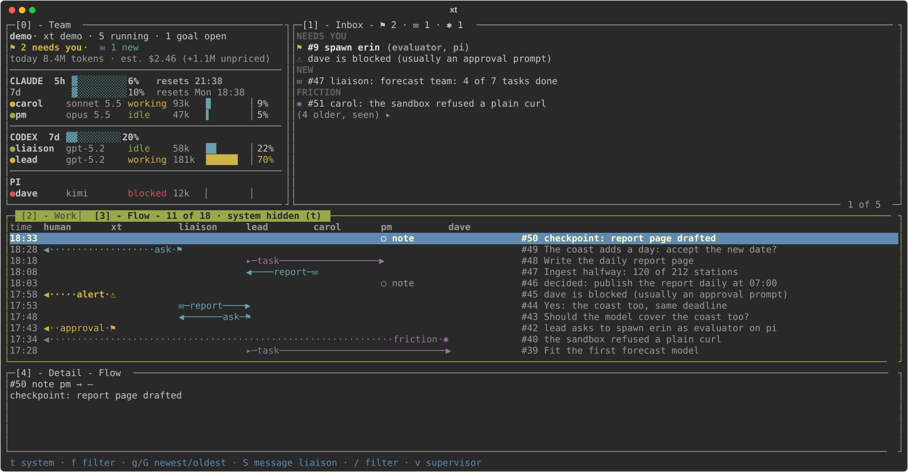
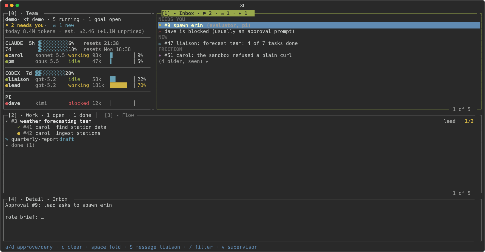

Inbox
Three groups
Needs you (questions, approvals, alerts, until you act), Notifications (done goals and reports since you last looked) and unread Friction. Your answers and what you've seen stay a week, folded: space opens them.
xt runs persistent, named Claude Code, Codex and pi agents as a hierarchical team. They work on their own for days. You talk to one of them in a chat: approve, decide and correct, and every step is on record.
$ curl -fsSLO https://raw.githubusercontent.com/radek-zitek-cloud/xt/main/bin/xt-clone.sh $ sh xt-clone.sh my-team
Clones xt into ./my-team, asks which harness runs the liaison and the lead, starts the team in its own Herdr session and attaches you to it. Needs Linux with Herdr, mise and one of codex, claude or pi. By hand, step by step: the README's quick start.
An agent only needs a shell and a prompt. xt owns everything around it: who talks to whom, what is open, what it costs, and what needs you.
A hierarchy, not a mesh. You talk to one agent; it talks to the lead; the lead runs the team.
xt send refuses anything outside the chain.The team runs without you watching. You are needed only for decisions.
xt inbox, with a desktop notification, and exactly one notification when a goal you gave is done.Independent quality checks, release candidates, acceptance against the spec.
-rc1; production stays on the accepted version until every card passes.Know what each agent holds and costs. Keep it inside the lines.
~211k/258k, yellow at 70%, red at 85%), tokens and estimated cost per turn and per goal, and the subscription allowance: Codex's week, Claude's five-hour and weekly windows.xt version use switches to a release after checks and a verified snapshot; xt version rollback goes back.xt down and xt restart --all bring back the team that was running; agents recover from files and a brief, not from memory. An agent resumed outside xt, without its settings (say, by the terminal multiplexer after a power cycle), is flagged with xt restart as the fix.
xt tui --demo at 160×40, made-up dataThe everyday way to work with xt: one conversation with the liaison, in your terminal.
tab picks the waiting question; xt checks the answer against its type and accepts it only from your own terminal.xt chat: made-up messages in its real layoutWhen you want to see how the work flows, or why it stopped: xt tui. Three bands: Team and the Inbox on top, Work or Flow in the middle, Detail at the bottom. What needs you comes first, every pane is titled by its key, the newest is on top everywhere, and a key line shows what the focused pane can do.

xt tui --demo at 160×40: made-up data, not a live teamNeeds you (questions, approvals, alerts, until you act), Notifications (done goals and reports since you last looked) and unread Friction. Your answers and what you've seen stay a week, folded: space opens them.
One column: each harness's account windows as bars with their reset time, then its agents: a dot in the state's colour (a red ! for one running without xt's launch settings), model and context used. Select the header or a harness line for versions, reading ages and why a window is unknown.
Goals with their tasks under them, open, done or failed, and how many are done; fold them, or show open work only.
One lane per agent and one arrow per message, newest on top, marked by its type; focus on one agent or one goal, or filter by text. It shares the middle pane with Work: 2 and 3 switch.
The selected item with its goal, tasks and every reply in time order, and where you are in it.
vWhat the supervisor did, newest first. A failed wake-up or notification now raises an Inbox alert.
Each one shown in real runs or accepted against its spec by the team's quality analyst, not only in unit tests.
A liaison, a lead and the members the lead hires, each in its own terminal, working while you're away.
Claude Code, Codex and pi agents in one team, each on its own model; xt speaks to all of them the same way.
Every message is delivered and logged. Nothing gets lost, and every step can be audited.
The liaison reads a goal back to you, lets you revise it, and dispatches it exactly once.
Yes/no, options with a recommendation, or open; stored as data, and every answer checked against it.
Exactly one notification for each goal you gave, and a "done since you last looked" list in the Inbox.
Daily wakes at a set local time, hourly scouts, quiet hours that hold to the second.
A newsroom picked and published stories when you didn't answer, and stopped at its daily limit.
Recorded lessons and a regular rules review keep the team's rules consistent and short.
xt version use checks, snapshots and switches; rollback goes back. Published, installed and running versions are shown apart.
The team that was running comes back, and each agent picks up from its brief, not from memory.
xt reset waits until the agent has saved its notes and has no open work, or queues until it's idle.
Per agent, per turn and per goal, with Codex's week and Claude's five-hour and weekly windows.
No desktop, browser or account connectors by default, a checked permissions file per Claude agent, and no posing as the human.
A coding agent of yours can report to the liaison under its own name and, for a time you set, run restarts and resets. Logged.
A quality analyst checks every card against its spec in a clean copy. A final PASS closes it; anything else waits for you.
A release starts as -rc1; the team stays on the accepted version until every card passes.
A command you name lists a board column; the lead is told about each card that enters it. Any board tool works.
Not demos: both teams worked from the same ledger and rules you'd use.
A liaison, a lead, a product manager, a builder, a quality analyst and a UX researcher. They plan from the backlog, build release candidates, accept or reject each card, and walk every candidate as a new user would; the human owns the approvals and every publication.
A scout read nine news feeds every hour and proposed stories; a researcher, an author, an editor and a publisher took the chosen one to a published article, every claim sourced.
xt is 0.x and about a week old. This is what it doesn't do yet.
xt is made by one person, Radek, mostly by the AI team it describes. If you tried it, even for five minutes, tell me what you used it for, or where it stopped you. Every note shapes what gets built next.
xt is for coordinating accountable AI agent teams across harnesses, not for replacing the tools those agents use to do their work.